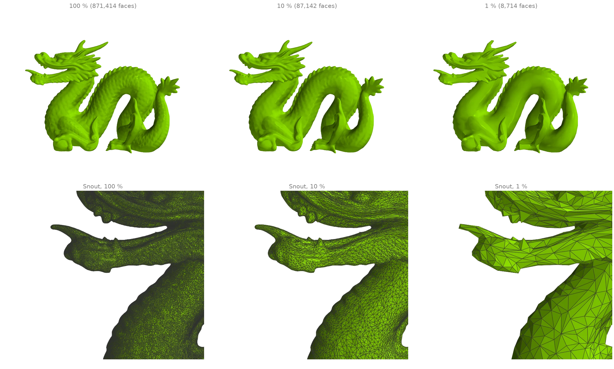
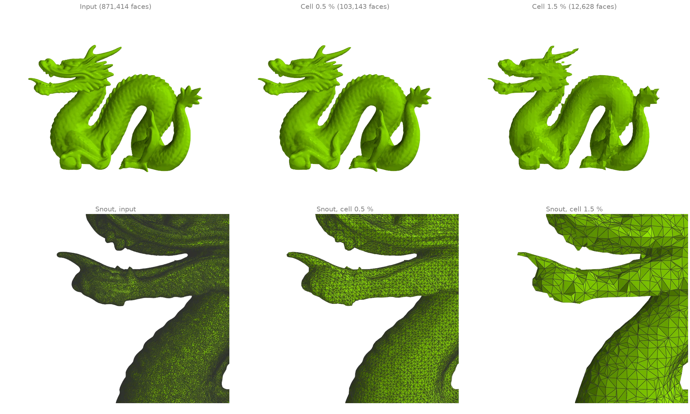
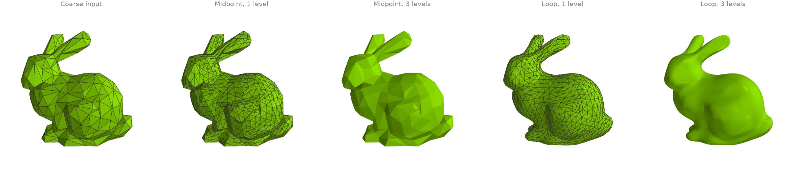
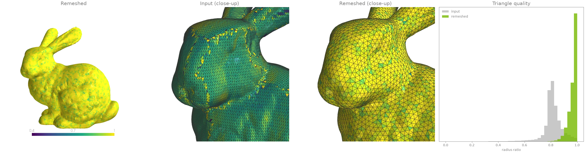
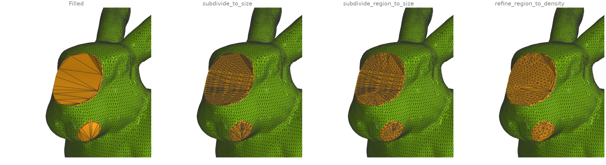
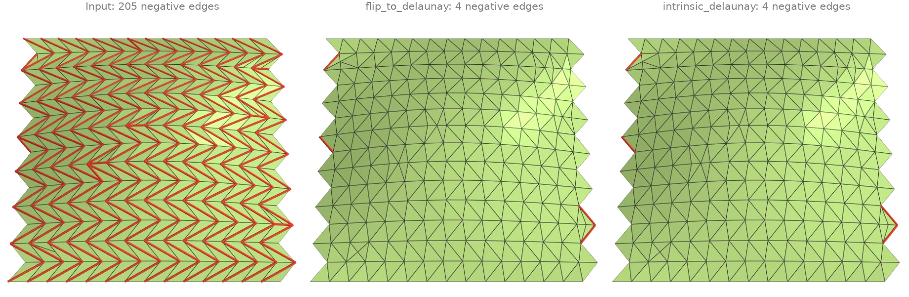

Remeshing and simplification
Decimation, subdivision, isotropic remeshing, local refinement and Delaunay flips.
Quadric decimation
quadric_decimate simplifies the dragon to a face budget by
Garland-Heckbert edge collapses: each collapse is priced by how far it moves the surface, so
flat regions are thinned first and the scales, teeth and creases survive longest. The
wireframe close-ups of the snout show the same three levels. Nothing is frozen by default
(feature_angle=180): the quadric error itself is what keeps creases, so even a scan full of
sharp edges reaches a 1 % budget.
import ordito as od
from examples import data
vertices, faces = data.load("dragon", device)
results = {}
for ratio in (0.1, 0.01):
results[ratio] = od.remesh.quadric_decimate(vertices, faces, target_ratio=ratio)
print(f"{ratio:.0%}: {faces.shape[0] // 3} -> {results[ratio][1].shape[0] // 3} faces")
10%: 871414 -> 87142 faces
1%: 871414 -> 8714 faces

Modelled on: MeshLib: decimate · Open3D: mesh simplification · PyVista: decimation · PyMeshLab · libigl 703
Vertex clustering
cluster_decimate snaps every vertex to a uniform voxel
grid, welds each occupied cell to one vertex and drops the faces that collapsed. It has no
priority queue, so it is fully parallel, but it is a resampling rather than a simplification:
the triangles come out uniform in size whatever the detail underneath, and thin features
narrower than a cell can weld together.
import numpy as np
import ordito as od
from examples import data
vertices, faces = data.load("dragon", device)
points = vertices.numpy()
diagonal = float(np.linalg.norm(points.max(axis=0) - points.min(axis=0)))
results = {}
for fraction in (0.005, 0.015):
results[fraction] = od.remesh.cluster_decimate(
vertices, faces, voxel_size=fraction * diagonal
)
print(
f"cells of {fraction:.1%} of the diagonal: {results[fraction][1].shape[0] // 3} faces"
)
cells of 0.5% of the diagonal: 103143 faces
cells of 1.5% of the diagonal: 12628 faces

Modelled on: Open3D: vertex clustering · PyMeshLab
Subdivision: midpoint and Loop
Both schemes split every triangle into four. subdivide puts the
new vertices at the edge midpoints, so the surface keeps its facets however often it is
applied; subdivide_loop moves old and new vertices by
Loop's stencils, and repeated passes converge to a smooth limit surface. The input is the
bunny decimated to a few hundred faces by
quadric_decimate.
import ordito as od
from examples import data
vertices, faces = data.load("bunny", device)
coarse = od.remesh.quadric_decimate(vertices, faces, target_faces=500, feature_angle=180.0)
midpoint, loop = [coarse], [coarse]
for _ in range(3):
midpoint.append(od.remesh.subdivide(*midpoint[-1]))
loop.append(od.remesh.subdivide_loop(*loop[-1]))
print("faces per level:", [f.shape[0] // 3 for _, f in loop])
faces per level: [499, 1996, 7984, 31936]

Modelled on: libigl 711 · Open3D: mesh subdivision · PyVista: subdivide · PyMeshLab
Isotropic remeshing
A scan's triangles come in every shape. isotropic_remesh
drives every edge toward one target length by repeated splits, collapses, valence-improving
flips and tangential smoothing, reprojecting onto the input after each pass, so the result is
the same surface sampled by near-equilateral triangles. The colours are
face_quality's radius ratio (1 for an equilateral
triangle, 0 for a degenerate one). Edges sharper than feature_angle are kept as creases;
on a noisy scan the default treats too many of them as features, so it is raised here.
import ordito as od
from examples import data
vertices, faces = data.load("bunny", device)
# A scan has no real creases; the default 30-degree feature angle would freeze its noise.
new_vertices, new_faces = od.remesh.isotropic_remesh(vertices, faces, feature_angle=90.0)
before = od.triangles.face_quality(vertices, faces, metric="radius_ratio").numpy()
after = od.triangles.face_quality(new_vertices, new_faces, metric="radius_ratio").numpy()
print(f"faces: {before.size} -> {after.size}")
print(f"mean radius ratio: {before.mean():.3f} -> {after.mean():.3f}")
print(f"faces below 0.5: {(before < 0.5).sum()} -> {(after < 0.5).sum()}")
faces: 69451 -> 20678
mean radius ratio: 0.814 -> 0.967
faces below 0.5: 618 -> 16

Modelled on: PyMeshLab
Refining to a size or to the surrounding density
Filling the bunny's holes with fill_min_weight leaves
patches of long triangles. Three refinements bring them to the scan's sampling:
subdivide_to_sizebisects every edge of the mesh longer than a bound, crack-free;subdivide_region_to_sizedoes the same inside a face region only, with Delaunay flips between passes;refine_region_to_densityneeds no length at all: it splits a patch triangle until its size matches its corners' surroundings (Liepa's criterion).
import numpy as np
import warp as wp
import ordito as od
from examples import data
vertices, faces = data.load("holey_bunny", device)
filled = od.holes.fill_min_weight(vertices, faces)
is_patch = np.arange(filled.shape[0] // 3) >= faces.shape[0] // 3 # fill faces come last
patch = wp.array(is_patch, dtype=wp.bool, device=device)
max_edge = 1.5 * od.edges.mean_edge_length(vertices, faces)
everywhere = od.remesh.subdivide_to_size(vertices, filled, max_edge, return_index=True)
in_region = od.remesh.subdivide_region_to_size(vertices, filled, patch, max_edge)
to_density = od.remesh.refine_region_to_density(vertices, filled, patch)
for name, (_, new_faces, *_) in {
"everywhere": everywhere,
"in the patches": in_region,
"to density": to_density,
}.items():
print(f"{name}: {filled.shape[0] // 3} -> {new_faces.shape[0] // 3} faces")
everywhere: 67736 -> 77152 faces
in the patches: 67736 -> 72408 faces
to density: 67736 -> 69776 faces

Modelled on: MeshLib: mesh modification · PyMeshLab · trimesh: subdivide_to_size
Delaunay flips and the intrinsic Delaunay triangulation
The patch is cut along the long diagonal of every sheared cell and carries a few needles and
caps, so most of its edges have a negative cotangent weight (red): the cotangent Laplacian
then violates the maximum principle.
flip_to_delaunay flips edges in space toward the empty
circumcircle property, with a dihedral gate so the surface barely moves;
intrinsic_delaunay flips intrinsically, along
geodesics across the two triangles, so no vertex or surface point moves at all; what is
left is on the boundary, where no flip can help.
robust_laplacian builds the cotangent Laplacian on
that intrinsic triangulation (after mollifying the degenerate faces).
import math
import numpy as np
import ordito as od
from examples import data
vertices, faces = data.load("sliver_patch", device)
flipped = od.remesh.flip_to_delaunay(vertices, faces, max_angle_change=math.radians(30.0))
intrinsic_faces, lengths, n_flips = od.remesh.intrinsic_delaunay(vertices, faces)
weights = {
"input": od.laplacian.cotmatrix_entries(vertices, faces),
"flip_to_delaunay": od.laplacian.cotmatrix_entries(vertices, flipped),
"intrinsic_delaunay": od.laplacian.cotmatrix_entries_intrinsic(lengths),
}
for name, w in weights.items():
print(f"{name}: {(w.numpy() < 0).sum()} negative half-cotangents")
print(f"{n_flips} intrinsic flips")
for build in (od.laplacian.cotmatrix, od.laplacian.robust_laplacian):
matrix = build(vertices, faces)
n = matrix.nnz_sync() # the value buffer may be longer than the matrix
rows = np.repeat(np.arange(matrix.nrow), np.diff(matrix.offsets.numpy()[: matrix.nrow + 1]))
off_diagonal = matrix.values.numpy()[:n][rows != matrix.columns.numpy()[:n]]
print(f"{build.__name__}: {(off_diagonal < 0).sum()} negative off-diagonal entries")
input: 412 negative half-cotangents
flip_to_delaunay: 24 negative half-cotangents
intrinsic_delaunay: 23 negative half-cotangents
230 intrinsic flips
cotmatrix: 410 negative off-diagonal entries
robust_laplacian: 8 negative off-diagonal entries

Modelled on: libigl 716 · PyMeshLab